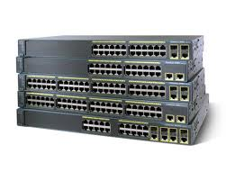

1 HUB E SWITCH: l'Hub distribuisce l'informazione a tutti i computer della rete locale ed ogni singolo computer decide se l'informazione gli e destinata o meno mentre lo Switch permette di trasmettere direttamente ad ogni singolo computer alleggerendo il traffico della rete locale. La banda passante nelle reti con Hub si divide tra i vari computer senza prendere in considerazione l'effettivo numero di porte collegate mentre il dispositivo Switch calcola il numero di porte connesse nella gestione del traffico della banda e suddividera equamente la banda per ogni computer connesso
2 ROUTER E HUB/SWITCH: Gli Hub e gli Switch permettono la connessione e lo scambio di diversi computer all'interno della stessa sotto-rete mentre il Router permette a diversi computer di reti diverse di comunicare e scambiarsi informazioni.
